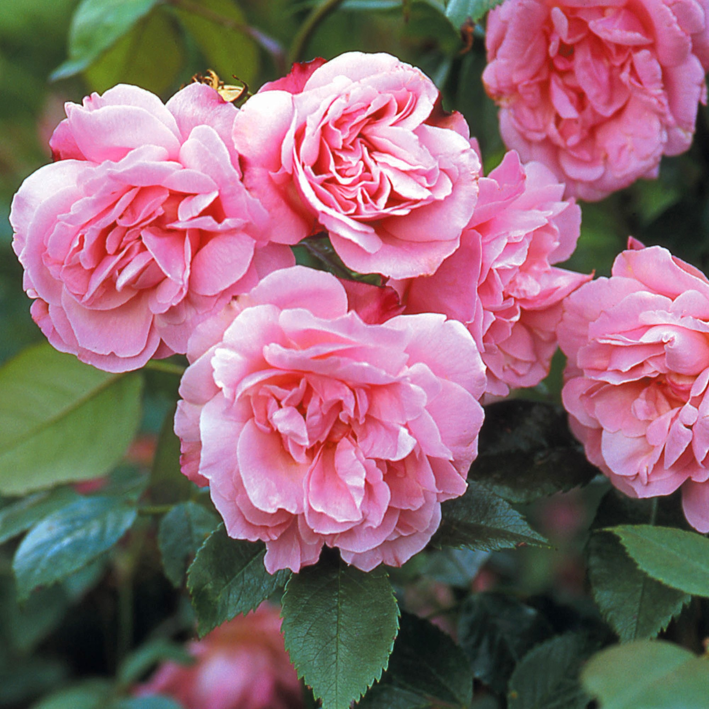

Троянда столиста
Граціозні форми, ніжне забарвлення, витончений аромат троянди з незапам’ятних часів чарували людей. Тому й створено безліч легенд про цю чарівну, ніжну й чудову квітку.
За староіндійською легендою, прекрасна богиня Лакшмі народилася з пуп’янка троянди.
У древньому індійському міфі розповідається, що прегарний юнак Адоніс, який уособлював прихід весни, постав із куща троянди.
У Персії так шанували царицю квітів, що навіть країна одержала назву Гюлістан – країна троянд.
У Римі цю квітку вважали символом хоробрості, нею нагороджували за доблесть.
В Афінах часів Аристофана трояндовий вінок одягали на шию переможцям змагань. Гірлянди квітів прикрашали колони і стіни залів у дні тріумфальних святкувань.
Існує припущення, що „русальна неділя” – давнє свято в Україні та Білорусі – пов’язана з „РОЗАРІЯМИ” – святом римлян на честь цих прекрасних квітів.
(Мамчур Ф.І., Гладун Я.Д., „Лікарські рослини на присадибній ділянці”)
